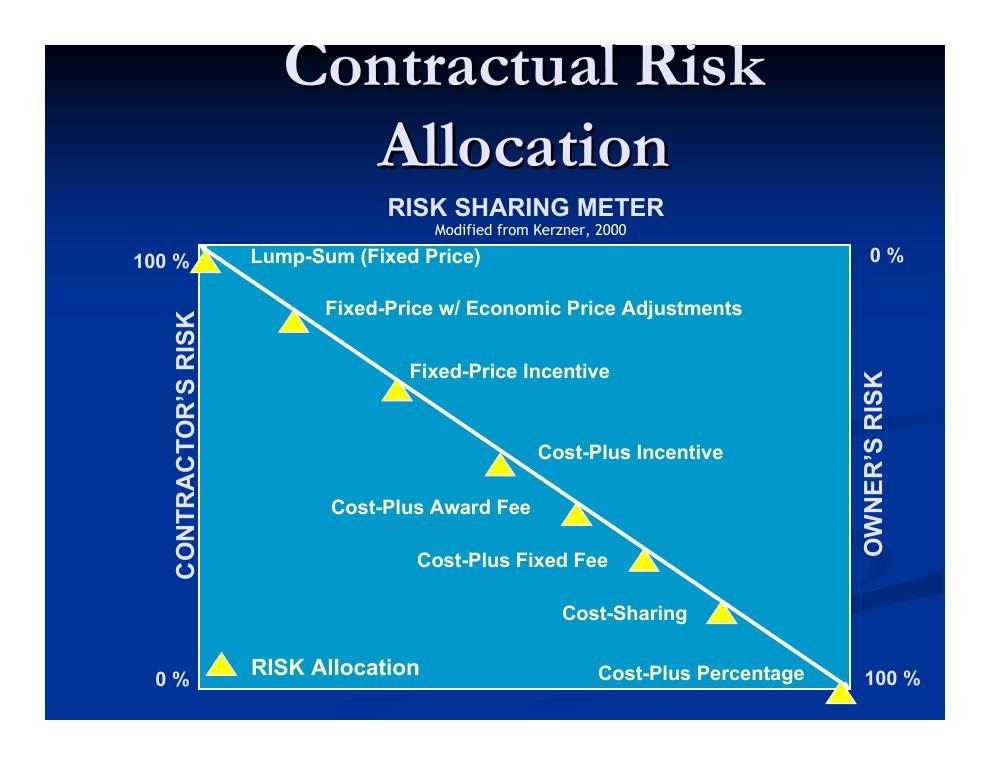
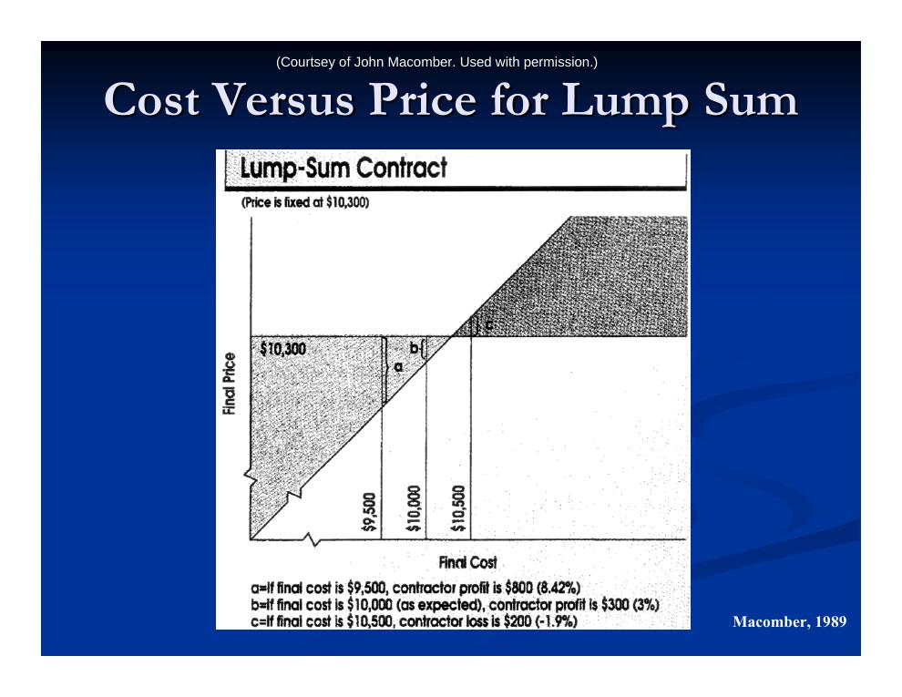
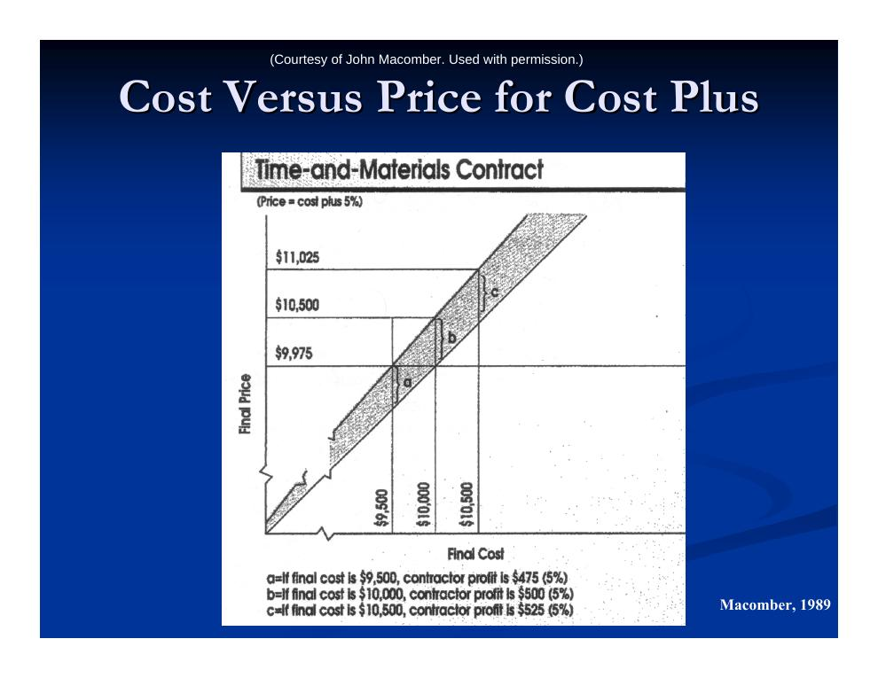
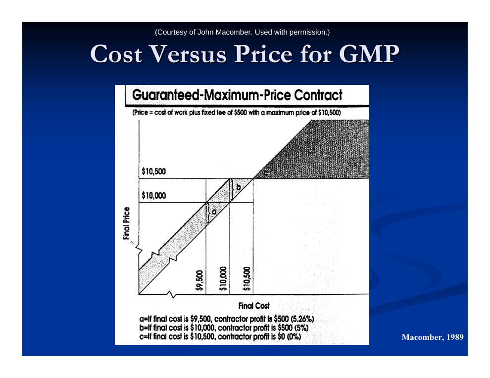

- Design-Build: Vertiefung und Auswahl der DB-Firma
- Risikoteilung als Leitprinzip des Bauvertrags
- Pauschalpreis (Lump Sum)
- Cost-Plus-Verträge (Selbstkostenerstattung)
- Einheitspreisvertrag
- Garantierter Maximalpreis (GMP)
- Preis, Zahlung und Gewinn im Formelvergleich
- Vergabeverfahren: Ausschreibung und Verhandlung
1. Design-Build: Vertiefung und Auswahl der DB-Firma
Die Vorlesung knüpft an Kapitel 2.1 an und wiederholt zunächst das Design-Build-Modell (Definition, Vor- und Nachteile, „Bridge Designer“, Hürden im öffentlichen Bereich, Varianten mit Construction Management sowie Turnkey, BOT, Multiple Primes und Owner/Agent – siehe dort). Neu bzw. vertieft sind vor allem folgende Punkte:
- Frühe Eigenplanung als Kommunikationsmittel: Der Bauherr entwickelt die frühe Planung in erster Linie, um seine Anforderungen an die DB-Firma zu kommunizieren.
- Qualitätssicherung: Da die treuhänderische Beziehung zum Planer fehlt, muss der Bauherr die Verantwortung für die Qualitätssicherung selbst übernehmen und die Planung eng verfolgen, um Überraschungen zu vermeiden.
- Entwurfsziele verteidigen: Innerhalb einer DB-Organisation dominieren oft die Interessen der Bauausführung – der Bauherr muss sicherstellen, dass die Entwurfsziele im Vordergrund bleiben. Ohne beobachtenden Planer können Probleme lange verborgen bleiben („die DB-Firma ist für alles verantwortlich“).
- Timing der Beauftragung: Eine sehr frühe Auswahl ist schwer zu beurteilen („wie ein Schönheitswettbewerb“); eine späte Auswahl verschenkt DB-Vorteile – weniger Fast-Tracking-Potenzial, weniger Kreativität (das Modell nähert sich dem Generalunternehmer). Häufig wird segmentiert bepreist: Cost-Plus für die Planung, Festpreis oder GMP für den Bau. Die Auswahl erfolgt umfassend über Entwurf, Preis, Termin und Team, oft mit Planungswettbewerben.
- Fallbeispiel I-15 (Ergänzung): Das 1,3-Mrd.-$-Joint-Venture unter Führung von Kiewit wurde fünf Monate vor Termin fertig – ein Beleg für das Beschleunigungspotenzial von Design-Build.
2. Risikoteilung als Leitprinzip des Bauvertrags
Vergütungs- und Vergabeverfahren lassen sich als Spektrum zwischen zwei Extremen verstehen:
| Extrem 1 | Extrem 2 | |
|---|---|---|
| Vergütung | Selbstkostenerstattung (reimbursable) | Festpreis (fixed price) |
| Produkttyp | Dienstleistung (Service) | Handelsware (Commodity) |
| Vergabe | Auswahl nach Reputation, Einigung per Verhandlung | Ausschreibung (Bidding) |
Kerngedanke: Risikoteilung. Die Vertragsparteien können unterschiedliche Risiken unterschiedlich gut steuern oder tragen. Der Bauherr (oder ein großer Auftragnehmer) ist oft besser für Baugrund- und Wetterrisiken geeignet; der Unternehmer beherrscht Risiken wie langsame Kolonnen, Gerätequalität, Beschaffung und Qualität der Bauleitung besser. Risiken werden im Vertrag so aufgeteilt, dass der Vertragspreis sinkt und der Unternehmer Anreize erhält, früh, im Budget und in guter Qualität fertigzustellen.
- Bauunternehmer sind oft stark risikoavers. Aus Kapitel 1 bekannt: die Risikoprämie. Ein Unternehmer ist bereit, dem Bauherrn faktisch etwas zu „zahlen“ (einen geringeren Vertragspreis zu verlangen), wenn der Bauherr ihm ein Risiko abnimmt, das er nicht steuern kann.
- Für Risiken, die der Unternehmer kontrollieren kann, ist es billiger, sie selbst zu managen, als eine Risikoprämie zu zahlen.
- Gestaltungsregel: Risiken, die der Unternehmer besser beherrscht, werden ihm auferlegt (er verliert Geld, wenn er sie nicht steuert – im Wettbewerb muss er sie managen); Risiken, die der Bauherr besser trägt, behält der Bauherr. „Besser beherrschen“ heißt: Die Risikoprämie, die Partei A für die Übernahme verlangen würde, ist kleiner als die von Partei B.
- Balance: Der Risikoanreiz muss hoch genug sein, damit der Unternehmer effizient und vertragskonform arbeitet (Termin- und Budgetanreiz, gute Teams, passende Geräte), aber niedrig genug für ein vernünftig niedriges Gebot – und angemessen für die Risikotragfähigkeit des Unternehmers.
Folgewirkungen der Risikoverteilung
- Verantwortung und Überwachung: Je mehr Risiko auf Partei A liegt, desto mehr Anreiz hat A, dieses Risiko zu managen und die relevanten Faktoren zu dokumentieren (damit B ein Problem nicht auf das Risiko schieben kann) – und desto mehr Anreiz hat B zu kontrollieren, dass A das Risiko nicht durch „Abkürzungen“ oder Regelverstöße abwehrt.
- Baubeginn: Beide Parteien müssen sich auf einen Preis einigen, bevor es losgeht. Je mehr Risiko eine Partei trägt, desto zögerlicher ist sie. Liegt viel Risiko beim Unternehmer, verzögert sich der Baubeginn: Bei hoher Unsicherheit verlangt er hohe Preise, die der Bauherr nicht früh zahlen will; mit fortschreitender Planung sinkt die Unsicherheit und die Preisvorstellungen konvergieren. Der Bauherr kann beschleunigen, indem er eine Risikoprämie zahlt oder Risiken übernimmt. Verzögerung kann teuer sein – Streit über Nachträge aber auch!
- Nachträge (Change Orders): Sie ändern den Vertrag (Kosten, Termin, Leistungsumfang) und können Kosten jenseits der Vertragssumme auslösen. Erwartete Nachtragskosten werden über eine Rückstellung („Contingency“, oft 1–3 % auf den vereinbarten Preis) einkalkuliert. Oft werden nur zusätzliche direkte Kosten vergütet – ein großes Problem bei Störungen des Bauablaufs. Nachträge sind eine sehr große Risikoquelle.

3. Pauschalpreis (Lump Sum)
Beim Pauschalpreisvertrag („Fixed Price“) muss der Unternehmer das Projekt zum vereinbarten Vertragswert fertigstellen – alle Kosten- und Terminrisiken liegen bei ihm. Der Bauherr kennt die Projektkosten schon vor Baubeginn. Das Risiko des Bauherrn ist minimal, sofern das Projekt gut geschätzt, die Vertragsunterlagen korrekt und der Leistungsumfang klar definiert sind. Für den Unternehmer besteht ein hoher Anreiz, früh (um weitere Aufträge anzunehmen) und kostengünstig (um Gewinn zu erzielen) fertig zu werden.

- Für viele öffentliche Projekte vorgeschrieben; gut für klar definierte Projekte mit echtem Preiswettbewerb um eine „Handelsware“.
- Schlecht für unscharf definierte Projekte: Es droht ein konfrontatives Verhältnis über Verantwortung und Vergütung von Änderungen.
- Das hohe Unternehmerrisiko führt typischerweise zu spätem Baubeginn.
- Achtung Begriffsverwirrung: „Fixed Price“ ist etwas ganz anderes als das übliche „Fixed Fee“ (Festhonorar, siehe unten).
4. Cost-Plus-Verträge (Selbstkostenerstattung)
Cost Plus Fixed % (Kosten plus prozentualer Zuschlag)
Der Bauherr erstattet die tatsächlichen Kosten plus einen festen Prozentsatz. Der Unternehmer verspricht lediglich sein Bemühen („best efforts“) und trägt kaum Risiko. Ausgewählt wird typischerweise nach Reputation und Vertrauen – die Leistung ist hier Dienstleistung, keine Handelsware.

- Vorteile: Maximale Flexibilität für den Bauherrn – kein Streit über Nachträge, denn jede Zusatzleistung wird bezahlt. Zusammenarbeit schon in frühen Projektphasen möglich (minimale Verhandlungszeit, geringe Bindungsangst des Unternehmers). Bezahlt wird nur, was tatsächlich anfällt – bei engem Management kann das günstiger sein als ein Festpreis.
- Nachteile: Der Bauherr trägt das gesamte Risiko. Es gibt wenig Anreiz zur Kostensenkung – Überstundenzuschläge können die Kosten sogar treiben; die Endkosten stehen erst am Schluss fest. Der Bauherr muss die Ausführung eng überwachen (langsame Kolonnen antreiben, Managementprobleme erkennen). Unternehmer haben einen Anreiz, Umfang und Preis wachsen zu lassen. Mit dem Turnkey-Modell verträgt sich diese Vergütung überhaupt nicht.
- Anwendungsfälle: Erfordert einen versierten Bauherrn. Sinnvoll, wenn eine Bepreisung anders nicht möglich und das Projekt dringend ist: Not- und Katastropheneinsätze (zivil, militärisch), unklarer riskanter Leistungsumfang (z. B. Sanierung historischer Gebäude mit unbekanntem Zustand, neue Technologien), unbekannter Umfang oder unbekannte Bauverfahren, vertrauliche Projekte (Begrenzung öffentlicher Information).
Cost Plus Fixed Fee („Festhonorar“)
Die Kosten dürfen schwanken, aber das Honorar bleibt fest und ist von der Projektdauer unabhängig. Wie Cost + % – jedoch mit teilweiser Risikoteilung: geringeres Zeitrisiko (starker Anreiz, früh fertig zu werden, denn eine längere Dauer erhöht das Honorar nicht) und geringeres Risiko, dass der Unternehmer das Projekt aufbläht.
5. Einheitspreisvertrag
Beim Einheitspreisvertrag (Unit Price) vereinbaren Bauherr und Unternehmer einen Preis je Mengeneinheit – ein interessantes Beispiel für Risikoteilung:
- Der Bauherr trägt das Risiko der Mengenunsicherheit, der Unternehmer das Risiko des Einheitspreises (Effizienz, Beschaffung).
- Die Gemeinkosten des Unternehmers müssen in die Einheitspreise eingerechnet werden; der Bauherr braucht Präsenz auf der Baustelle, um die tatsächlichen Mengen zu messen.
- Weichen die Mengen um mehr als etwa 20 % ab, wird typischerweise nachverhandelt – die Menge beeinflusst wegen Skaleneffekten den Preis.
- Das Verfahren hängt stark von der Genauigkeit der Mengenschätzung des Bauherrn/Planers ab. Es droht unausgewogenes Bieten („unbalanced bidding“): Glaubt der Unternehmer, dass die tatsächlichen Mengen abweichen, kann er einzelne Einheitspreise gezielt erhöhen oder senken. Da nach tatsächlichen Mengen abgerechnet wird, kann er damit gewinnen oder verlieren; stark unausgewogene Gebote können ausgeschlossen werden. Die Gesamtkosten für den Bauherrn können am Ende höher liegen als geplant.
6. Garantierter Maximalpreis (GMP)
Der Guaranteed Maximum Price (GMP) ist eine Variante des Cost-Plus-Vertrags mit einer Obergrenze („Deckel“) für die direkten Kosten: Ab dieser Grenze trägt der Unternehmer alle weiteren Kosten. Häufig startet man mit Cost Plus Fixed Fee und legt den GMP z. B. bei 90 % Planungsstand fest. Die beste Variante ist meist GM Shared Savings: Einsparungen unterhalb des Maximalpreises werden geteilt (60/40 oder gleitend). Sehr gut geeignet für Turnkey-Projekte mit klar definiertem Umfang.

- Vorteile: Erleichtert die Finanzierung; Fast-Tracking möglich; Einsparungen unterhalb des GMP verbleiben (ganz oder anteilig) beim Bauherrn; oft schneller Baubeginn – insbesondere wenn der Unternehmer schon in die Planung eingebunden war. Der Vertragspreis kann allerdings über einem Festpreis liegen, da die Planung beim Vertragsschluss oft noch unvollständig ist.
- Nachteile: Unternehmer können trotzdem viel ausgeben – der Bauherr muss die Ausgaben überwachen. Streit droht über die Frage, was direkte und was indirekte Kosten sind (also was unter den Deckel fällt). Schlecht, wenn der Leistungsumfang nach GMP-Vereinbarung unklar ist (Nachverhandlung nötig). Wie beim Cost Plus Fixed Fee kann die Qualität geopfert werden, wo ohne GMP Kosten oder Termin gestiegen wären.
7. Preis, Zahlung und Gewinn im Formelvergleich
Nach Hendrickson (2000) lassen sich die Vertragstypen mit wenigen Größen formal vergleichen:
- E
- Ursprüngliche Schätzung des Unternehmers für die direkten Kosten bei Vertragsschluss
- M
- Zuschlag (Markup) des Unternehmers im Vertrag
- B
- Geschätzter Baupreis bei Vertragsunterzeichnung
- A
- Tatsächliche Kosten des Unternehmers für den ursprünglichen Leistungsumfang
- U
- Unterschätzung der Kosten in der ursprünglichen Schätzung (negativer Wert = Überschätzung)
- C
- Zusatzkosten durch Nachträge (Change Orders)
- P
- Tatsächliche Zahlung des Bauherrn an den Unternehmer
- F
- Bruttogewinn des Unternehmers
- R
- Prozentualer Basiszuschlag auf die ursprüngliche Schätzung beim Festhonorarvertrag
- Ri
- Zusätzlicher Risikozuschlag für Vertragstyp i, sodass der Gesamtzuschlag (R + Ri) beträgt – z. B. (R + R1) beim Pauschalpreis, (R + R2) beim Einheitspreis, (R + R3) beim GMP
- N
- Teilungsfaktor für die Kosteneinsparung bei Zielpreisverträgen, mit 0 ≤ N ≤ 1
Ursprünglich vereinbarter Vertragspreis
| Vertragstyp | Zuschlag M | Vertragspreis B |
|---|---|---|
| Pauschalpreis (Lump Sum) | M = (R + R1)·E | B = (1 + R + R1)·E |
| Einheitspreis (Unit Price) | M = (R + R2)·E | B = (1 + R + R2)·E |
| Cost Plus Fixed % | M = R·A = R·E | B = (1 + R)·E |
| Cost Plus Fixed Fee | M = R·E | B = (1 + R)·E |
| GMP | M = (R + R3)·E | B = (1 + R + R3)·E |
Tatsächliche Zahlung des Bauherrn
| Vertragstyp | Zahlung für Nachträge | Zahlung des Bauherrn P |
|---|---|---|
| Pauschalpreis | C·(1 + R + R1) | P = B + C·(1 + R + R1) |
| Einheitspreis | C·(1 + R + R2) | P = (1 + R + R2)·A + C |
| Cost Plus Fixed % | C·(1 + R) | P = (1 + R)·(A + C) |
| Cost Plus Fixed Fee | C | P = R·E + A + C |
| GMP | 0 | P = B |
Bruttogewinn des Unternehmers
| Vertragstyp | Gewinn aus Nachträgen | Bruttogewinn F |
|---|---|---|
| Pauschalpreis | C·(R + R1) | F = E − A + (R + R1)·(E + C) |
| Einheitspreis | C·(R + R2) | F = (R + R2)·(A + C) |
| Cost Plus Fixed % | C·R | F = R·(A + C) |
| Cost Plus Fixed Fee | 0 | F = R·E |
| GMP | −C | F = (1 + R + R3)·E − A − C |
Prinzip der Anreizverträge (Incentive Contracts)
Bei Anreizverträgen sind Zusatzgewinne durch Kostensenkung möglich: Bauherr und Unternehmer teilen sich die Einsparungen – und auch die Überschreitungen (nach Kerzner, 2000):
Bei Kostenüberschreitung: Der Bauherr zahlt 80 % der Überschreitung, der Unternehmer trägt 20 % – sein Gewinn beträgt 1.500 $ minus seinen 20-%-Anteil.
Bei Kostenunterschreitung: Der Bauherr behält 80 % der Einsparung, der Unternehmer 20 % – sein Gewinn beträgt 1.500 $ plus seinen 20-%-Anteil.
Hinweis: Für Preis oder Gewinn können zusätzlich Ober-/Untergrenzen vereinbart werden.
Fazit zur Vertragswahl
In schwachen Marktphasen können Bauherren Festpreisgebote durchsetzen; bei vollen Auftragsbüchern gelingt das kaum. Die Wahl des Vertragstyps sollte abhängen von: der Genauigkeit der Kostenschätzung, der Frage, ob die Endkosten (oder zumindest eine Obergrenze) von Beginn an feststehen müssen, der gewünschten Risikoverteilung und davon, ob eine schnelle Fertigstellung gewünscht ist.
8. Vergabeverfahren: Ausschreibung und Verhandlung
Ausschreibung (Bidding)
- Varianten: Billigstbieterprinzip (Low Bid) oder Mehrparameter-Vergabe – niedrigstes Gebot plus arithmetische Kombination weiterer Faktoren oder Gebot geteilt durch die Bewertung weiterer Faktoren.
- Ein Festpreis nach Billigstbieterprinzip erzeugt eine Win-lose-Situation; typischerweise mit Pauschalpreisverträgen verbunden. Präqualifikation ist entscheidend.
- Abwägungen: Die Frist für die Angebotsbearbeitung darf weder zu lang (Bauverzug) noch zu kurz sein (schlechte Gebote mit hohen Risikoprämien oder unrealistisch niedrig; wenige Bieter). Die Bieterzahl darf weder zu hoch (schreckt die besten Unternehmen ab) noch zu niedrig sein (kein Wettbewerb).
- Vorteile: guter Preis, Transparenz. Nachteile: Win-lose-Konstellation; der Wettbewerbsdruck kann den Gewinn aus dem Gebot eliminieren – kompensiert wird dann über Nachträge und Abkürzungen, was zu kämpferischen Beziehungen führt; der Entwurf wird vor der Bepreisung zu wenig gewürdigt.
- Bewertungsmetriken: Am häufigsten zählt der Preis allein. Alternativen: „Bidding Cap“ (geboten wird, wie viel Leistung für eine feste Summe geliefert wird) und die zunehmend beliebte Mehrparameter-Vergabe mit Zeit, Qualität und Qualifikation – additiv („A+B“, z. B. Preis + ($/Tag) × Bauzeit, üblich im Einzelhandelsbau, oder Preis + Qualifikation + Entwurfsrang) oder als Quotient („A/B“, wobei B eine Bewertung etwa des Entwurfs ist).
- Ablauf: Meist unter Aufsicht des Planers. Bekanntmachung (mit Qualifikationsanforderungen), Bereitstellung der Ausschreibungsunterlagen (typischerweise inkl. Fair-Cost-Schätzung und Mustervertrag), Beantwortung von Bieterfragen (RFIs), Bieterkonferenz (Erläuterung von Umfang und Randbedingungen, schriftlich dokumentiert).
- Öffentlich vs. privat: Öffentliche Ausschreibungen müssen öffentlich bekannt gemacht werden (Zeitungen, Aushang); die Eignungsprüfung erfolgt nach Angebotsabgabe; typisch ist eine 60-Tage-Frist. Private Ausschreibungen können auf Einladung beschränkt sein; die Eignungsprüfung erfolgt vor Angebotsabgabe.
- Extrem niedrige Gebote: Die Leistung aus einem unrealistisch niedrigen Gebot zu erzwingen ist gefährlich – hochstrittige Bauabwicklung, schlechte Moral, extremes Abkürzen; auch ein Ausfall (Default) ist möglich, mit Störungen und schwieriger Abwicklung über die Bürgschaftsversicherer.
- Nachunternehmergebote: Generalunternehmer drücken vor der eigenen Angebotsabgabe die Preise der Nachunternehmer – ohne Verpflichtung, den Anbietenden später zu beauftragen. Das kann zu räuberischem Verhalten führen: „Bid Shopping“ (Herumreichen von Geboten vor und nach dem Zuschlag) und „Bid Peddling“ (unaufgeforderte Unterbietungsangebote von Nachunternehmern nach dem Zuschlag). Manche Bauherren/Bundesstaaten verlangen deshalb die Benennung der Nachunternehmer bei Angebotsabgabe oder vergeben die Gewerke über eigene Nachunternehmer-Ausschreibungen.
- Übliche Eignungskriterien: Bürgschaften/Versicherungen (Bietungs-, Erfüllungs-, Zahlungsbürgschaft), Arbeitssicherheitsbilanz, Reputation, Finanzkraft, freie Kapazitäten, Zulassungen, Erfahrung mit der Bauaufgabe, Erfahrung mit Region und Arbeitsmarkt, Managementsystem (QS, Planung, Kalkulation, Steuerung), gezeigtes Interesse und Anpassungsfähigkeit.
Verhandlung (Negotiation)
- Auswahl typischerweise nach Reputation und Qualifikation. Zwei klassische Anwendungsfälle: sehr einfache Projekte (vertrauter Partner) und sehr komplexe/große Projekte (Unternehmer früh in die Planung einbinden, früher Baubeginn). Erfordert einen versierten Bauherrn (Angebote bewerten, Leistung überwachen). Auch beim traditionellen Modell wichtig – für Änderungen nach dem Zuschlag.
- Win-win ist möglich, weil sich die Parteien in Risikopräferenzen und der relativen Gewichtung einzelner Vertragsmerkmale unterscheiden; Ziel ist eine pareto-optimale Einigung. Die Schlüsselkompetenz ist, Win-win-Optionen zu finden.
- Verhandlungstipps: Einen klaren Reservationspreis im Kopf behalten (Preis bzw. Bedingungen, zu denen man gerade noch abschließt); die eigene Position auf objektive Kriterien stützen (sonst wirken Forderungen willkürlich und werden persönlich genommen); mehrere Themen gleichzeitig verhandeln (ermöglicht flexible Tauschgeschäfte); formale Schulung hilft – Erfahrung verschafft den Vorsprung.
- Die vier „Todsünden“ der Verhandlung (Thompson, 2001): Geld auf dem Tisch liegen lassen (Win-win-Chancen nicht erkannt), sich mit zu wenig zufriedengeben (unnötig große Zugeständnisse), vom Tisch weglaufen (vorteilhafte Bedingungen aus Stolz ablehnen), schlechter abschließen als die beste Alternative (Abschlussdruck führt zu einem Deal unterhalb der Opportunitätskosten).